RamePlayer инструкция и помощь
Использование плеера
Веб-интерфейс управления устройством можно открыть, если вы введете IP-адрес (который отображается на LCD экране устройства) в адресную строку браузера. К нему можно подключиться с любого компьютера, который соединен с той же сетью.
Перенесите все необходимые медиа-файлы на USB носитель и вставьте его в USB порт устройства. В веб-интерфейсе будет отображена папка USB носителя.
Чтобы выбрать файл, нажмите на него. Он станет отображаться как активный.
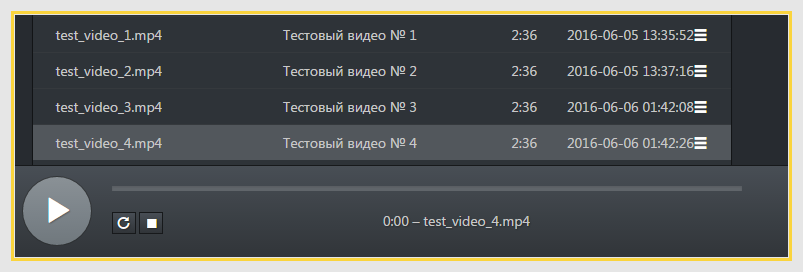Нажмите на кнопку Проиграть, чтобы начать воспроизведение видео. Также вы можете использовать кнопки Пауза / Остановить и при необходимости возможно перемотать видео с помощью круглого идентификатора позиции на линии времени.
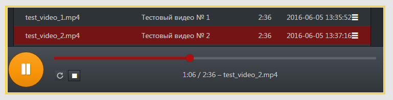Чтобы начать воспроизведение с постоянным повтором того же видеофайла, воспользуйтесь кнопкой Повтор.
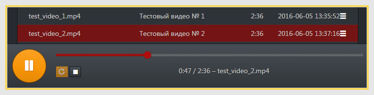Списки проигрывания
Чтобы добавить файлы в Рабочий список проигрывания из USB хранилища, нужно открыть раздел USB, выбрать нужный файл, нажать + Добавить в рабочий список.
Чтобы добавить все файлы из текущей папки (в примере корневая папка «sda1»), нажмите в выпадающем списке + Добавить папку в рабочий список.
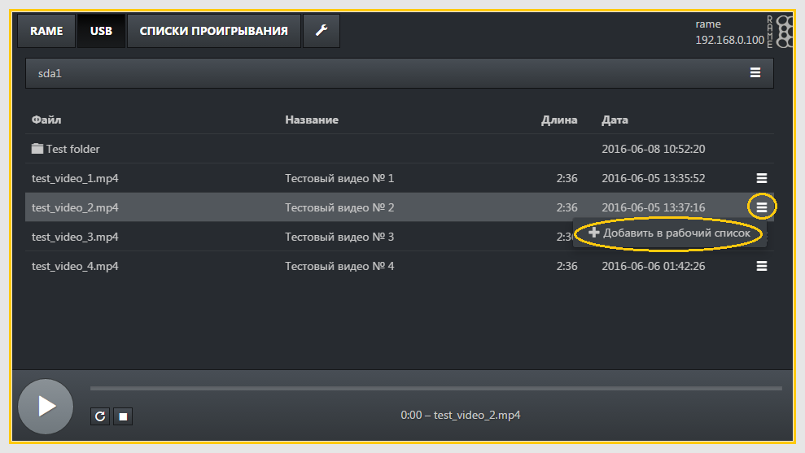
В разделе Списки проигрывания вы можете сохранить Рабочий список, выбрав в выпадающем списке Сохранить как.
Введите название списка, выберите место сохранения и, если необходимо, отметьте доступные параметры.
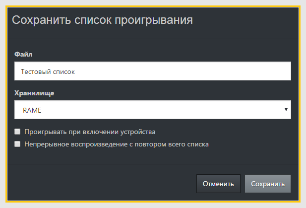
Добавление видеопотоков
Чтобы добавить видеопотоки в рабочий список, выберите в выпадающем списке Добавить видеопоток.
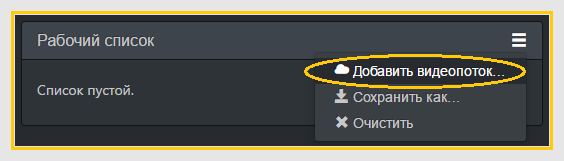Введите адрес видеопотока в поле URL, а имя потока в поле Название. Выберите видеопоток в списке проигрывания и нажмите на Проиграть, чтобы посмотреть видеопоток.
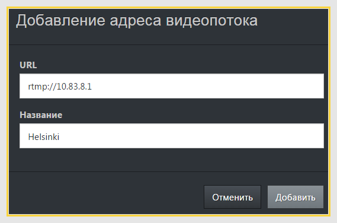Конфигурация кластера
Чтобы настроить RamePlayer для использования в кластерном режиме, сперва откройте веб-интерфейс основного устройства.
Далее откройте раздел Настройки (значок гаечного ключа)
и под заголовком Кластер нажмите на кнопку Добавить устройство.
Впишите адреса других RamePlayer устройств в поле IP адрес (по умолчанию установлен порт 8000). Для резервных устройств установите задержку проигрывания на 10 секунд.
Нажмите на + Добавить, чтобы добавить устройство в кластер.
В кластер нужно добавлять все устройства, кроме основного.
Готовый кластер, который состоит из 2 устройств (основное устройство и резервное устройство с задержкой на 10 секунд).
Синхронизация списков проигрывания для кластера
Создание списков проигрывания для устройств
На каждом устройстве должны быть подготовлены списки проигрывания на соответствующем языке, см. Списки проигрывания для более подробного описания работы со списками.
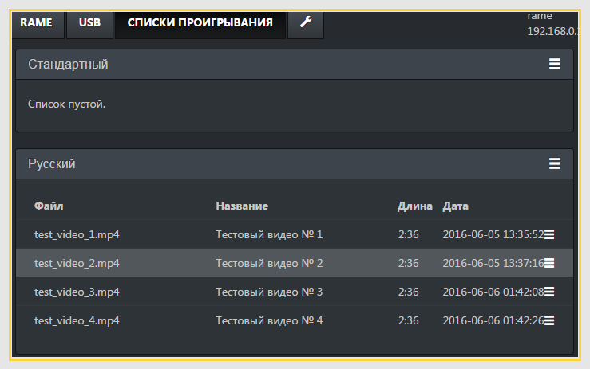
Список с названием «Русский» готов к синхронизированию.
Синхронизация списков проигрывания
Чтобы контролировать кластер устройств, списки проигрывания должны быть синхронизированы для совместного использования:
1. В сохраненном списке проигрывания на основном устройстве: нажмите на кнопку настройки в правом углу и выберите Синхронизировать.
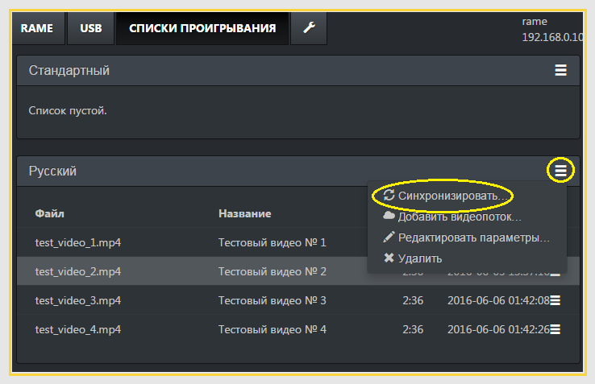
2. Выберите устройство и список проигрывания, которые нужно синхронизировать.
3. Повторите действия для каждого устройства и списка проигрывания.
Помните, что все параметры синхронизации списков проигрывания нужно настраивать на основном устройстве.
Работа в режиме кластера
Чтобы работать в режиме кластера, держите открытым веб-интерфейс основного устройства.
Заметьте, что кластер «существует» лишь в браузере - настройки кластера не сохраняются ни в одном устройстве.
Ниже приведен пример кластера из двух устройств, где «резервное устройство» использует 10-секундную задержку.
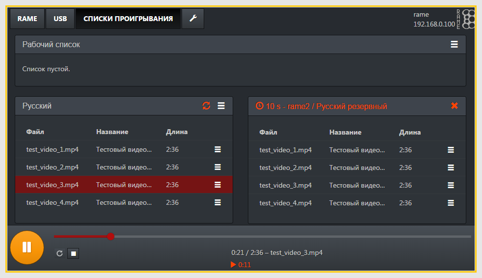Кластер с отличающимися списками проигрывания
Можно использовать кластер с разными списками проигрывания на каждом устройстве. Например, на одном устройстве файлы на русском языке, а на другом языке доступны лишь некоторые из всех файлов. При синхронизации с устройством, имеющим такой список, несуществующие записи (прочерк) будут добавлены в конец синхронизированного списка проигрывания, чтобы длина списков совпадала. Перетаскивая записи, придерживайте значок выпадающего списка справа, чтобы поменять их очередность (включая пустые записи). Убедитесь, что файлы находятся на верных позициях и пустые записи стоят в правильных местах.
Ниже приведен пример кластера из трех устройств, где на одном устройстве в списке проигрывания
находятся лишь две записи. В примере список уже отсортирован.
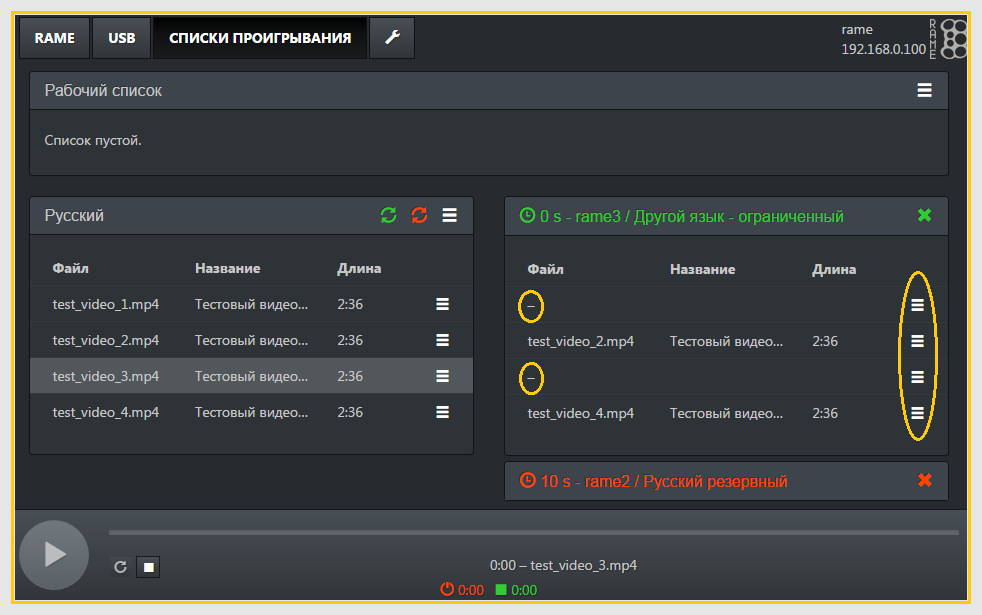
Администраторские настройки
Разрешение видео
- Автоматическое, с помощью HDMI подтверждения (по умолчанию)
- Вручную (настройка разрешения и частоты кадров)
0 / 90 / 180 / 270 градусов. По умолчанию - 0.
Аудио выход
- Аналоговый
- Только HDMI (без контроля уровня звука; отсутствует передача звука на наушники)
- Оба
Разрешены только буквы латинского алфавита и цифры (без использования «специальных знаков»).
IP-конфигурация
- IP-адрес устройства и маска подсети заполняются обязательно
- IP-адрес сетевого шлюза и DNS не обязательны для заполнения (но требуются для связи с интернетом)
- Использование RamePlayer как DHCP-сервер (не обязательно): RamePlayer может действовать как DHCP-сервер, присваивая IP-адреса другим устройствам в той же сети, используя указанный диапазон IP-адресов.
Будьте осторожны, когда указываете диапазон, чтобы адреса не пересекались с устройствами, имеющими статические IP-адреса. Также убедитесь, что в сети настроен лишь один DHCP-сервер!
По умолчанию RamePlayer получает IP настройки из DHCP-сервера.
Также доступна ручная конфигурация IP настроек:
- NTP-сервер — устройство автоматически синхронизирует время, если указан NTP-сервер и устройству доступен интернет.
- Если устройство не подключено к интернету, вы можете вручную установить дату и время (используя зону времени UTC).
Следует отметить, что при подключении к интернету устройства с указанным NTP-сервером автоматическая синхронизация времени перепишет вручную установленное время.
Замечание: Сейчас RamePlayer всегда настроен на зону времени «Europe/Helsinki», и на мини-LCD экране время будет показано, используя эту зону времени. Однако веб-интерфейс показывает текущее время устройства в зоне UTC.
Заводские настройки — восстанавливаются изначальные значения всех настроек и удаляются данные из внутреннего хранилища.
Восстановление заводских настроек не рекомендуется, кроме крайней необходимости!
После восстановления заводских настроек устройству потребуется заново определить доступные компоненты аппаратуры, и оно будет перезагружаться дважды. Включение устройства займет времени дольше обычного. Иногда после этого желательно еще сделать полную перезагрузку (выключить и включить устройство).
Уровни звука — доступно, если выбран аналоговый аудио выход. Сперва требуется развернуть соответствующий регулятор уровня, чтобы снизить вероятность случайного изменения уровней.- Линейный выход – Диапазон: 0...110%
- Наушники – Диапазон: 0...100%. Также меняется регулятором на устройстве (в веб-интерфейсе изменения отображаются после обновления страницы).
Требуется подключение к интернету. Выберите одну из доступных версий прошивки, нажмите Обновить и ждите, пока RamePlayer автоматически перезагрузится.
Важно заметить, что обновление на более старую версию прошивки не рекомендуется (может привести к неработоспособному устройству, особенно если версия обновится до слишком старой).
Перезагрузить устройство — выполняет перезагрузку ПО.Вы можете совершить аппаратную перезагрузку, выключив устройство и через некоторое время опять включив.
Информация о RamePlayer- Версия прошивки – RamePlayer ПО
- Версия аппаратуры – Тип и номер конфигурации
- Детали
- Версия веб-интерфейса и версия бэкенда (Backend) – информация о версиях разработки
- Версия дополнения аппарата (Hw add-on) – тип, идентификатор продукта, версия продукта и UUID (если есть).
- Параметры аппарата (Hw cfg) – идентифицирующая информация как битовая маска в шестнадцатеричной записи: список идентификаторов компонентов (id/cids = активированы при включении, id/eeprom_cids = установлены в eeprom), версия аппаратной основы.
Соединение с другой аппаратурой
Подключение к ATEM видео микшеру
Проверьте, какой режим конфигурации используется в ATEM микшере (720p или 1080p). Установите тот же режим в RamePlayer. (См. примеры ниже). Если ATEM в режиме 720p, он будет в автоматическом HDMI подтверждении сообщать о возможности использования 1080p, поэтому RamePlayer будет посылать изображение в неверном формате, если настроено автоматическое видео разрешение.
После сохранения настроек нужно сделать аппаратурную перезагрузку RamePlayer (выключить и через некоторое время опять включить).
Также может потребоваться отсоединить HDMI провод от RamePlayer перед включением и присоединить провод после включения RamePlayer.
Вышеуказанные шаги нужно выполнить, чтобы настройки были верными между ATEM и RamePlayer.
Если проблемы не удалось устранить, попробуйте использовать режим «720p 50 Hz» как в ATEM, так и в RamePlayer. Чтобы включить этот режим в RamePlayer, откройте Настройки → Административные настройки:
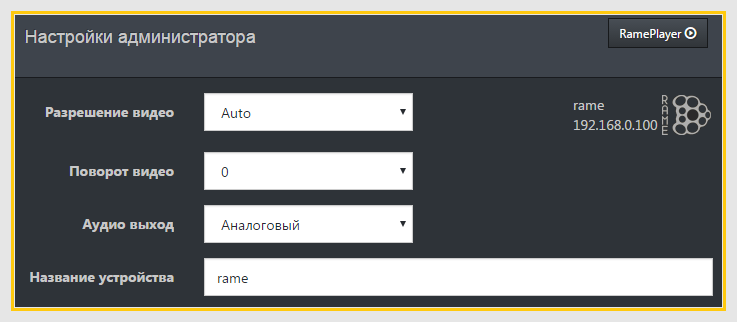Поменяйте Разрешение видео с «Auto» на «720p 50 Hz»:
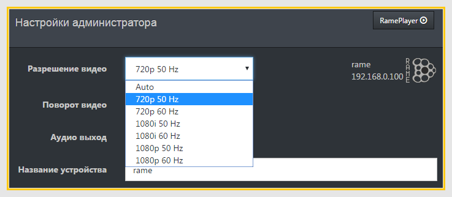